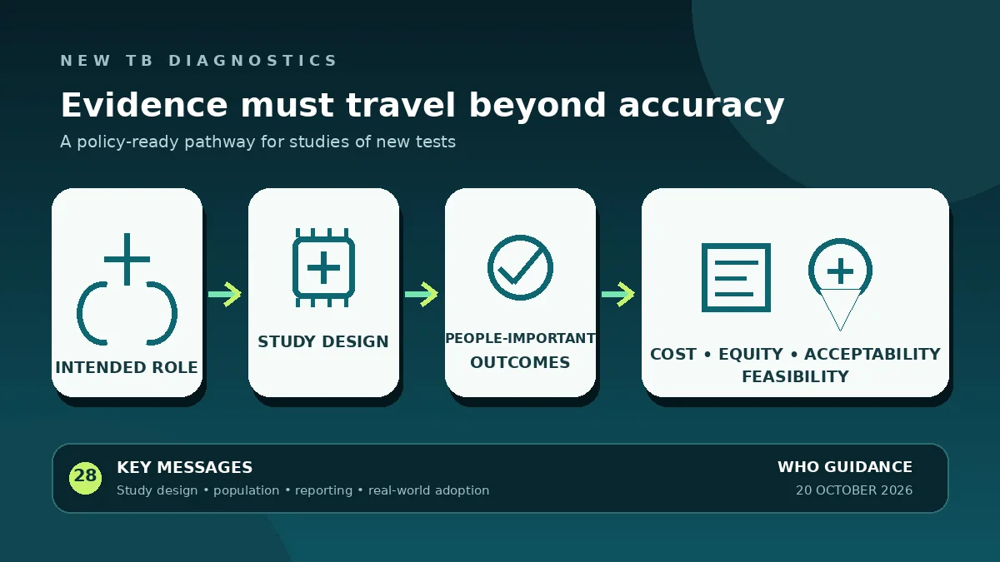

Bir test kontrollü koşullarda doğru olabilir; ancak uygun olmayan popülasyon, maliyet, uygulama güçlüğü ya da sonucun klinik karara ulaşmaması nedeniyle gerçek bakım yolunda beklenen etkiyi göstermeyebilir. WHO rehberi, testin klinik yoldaki rolünün en başta tanımlanmasını ve çalışmanın bu role göre tasarlanmasını istiyor. Yine de rehberin yayımlanması herhangi bir ürünün etkili olduğunu kanıtlamaz ve TB tanı-tedavi kılavuzlarının yerini almaz.

Bir dakikalık özet
Dünya Sağlık Örgütü, “Yeni tüberküloz tanı yöntemlerinde kanıt üretimi rehberi”ni 20 Ekim 2026'da yayımladı ve ertesi gün resmi bir güncellemeyle tanıttı. WHO editörlüğündeki, ISBN 978-92-4-012379-3 numaralı 121 sayfalık belge; yeni TB testleri, örnek türleri ve test stratejilerine ilişkin kanıtı WHO kılavuz geliştirme sürecine hazırlayan araştırmacılar, teknoloji geliştiricileri, fon sağlayıcılar ve diğer paydaşlar için yazıldı. [1] [2]
Belge bir klinik çalışma sonucu, etkililik derlemesi veya ürün onayı değildir. Yirmi sekiz ana mesaj; doğruluk çalışmasının nasıl tasarlanacağı, kimlerin araştırmaya alınacağı, örneklem büyüklüğü ve raporlamanın yanı sıra insan için önemli sonuçlar, değerler, maliyet-etkililik, hakkaniyet, kabul edilebilirlik ve uygulanabilirlik için hangi kanıtların gerektiğini ele alıyor. Doğru başlık “daha iyi kanıt standardı”dır; “TB'yi daha iyi bulan yeni test” değildir. [1]
Tanısal doğruluk neden yetmiyor?
Duyarlılık ve özgüllük, bir testin çalışma koşullarında hastalığı olanlarla olmayanları ne ölçüde doğru sınıflandırdığını gösterir. Politika yapıcı ise başka sorulara da yanıt arar: Test bakım yolunun hangi noktasında kullanılacak? Tarama, tanıyı doğrulama ya da ilaç direncini saptama amacı mı taşıyor? Sonuç zamanında klinik karara dönüşecek mi? Yaygın kullanım için altyapı, personel ve bütçe var mı? En çok gereksinimi bulunan gruplar çalışmada temsil edildi mi?
WHO'ya göre yeni TB tanıları için üretilen kanıt sıkça eksik kaldı: bazı araştırmalar yalnızca doğruluğa odaklandı, yöntemsel sınırlılıklar taşıdı, müdahaleden en çok yararlanabilecek kırılgan grupları dışladı ya da maliyet, hakkaniyet, kabul edilebilirlik ve uygulanabilirlik hakkında az bilgi sundu. Eksik veya tutarsız raporlama da çalışmaların birlikte değerlendirilmesini zorlaştırdı. Bu eleştiri doğruluğu önemsiz yapmaz; doğruluk gereklidir, fakat politika kararı için tek başına yeterli değildir. [1] [2]
Analitik çerçeve neyi değiştiriyor?
Rehberin merkezinde, tanı yönteminin klinik yol içindeki “amaçlanan rolünü” haritalayan ve bu rolü çalışma tasarımı, popülasyon, yöntemler ve sonuç raporlamasıyla ilişkilendiren yeni bir analitik çerçeve var. Toplum düzeyinde tarama amacıyla kullanılacak bir test ile referans laboratuvarında ilaç direncini doğrulayacak testin araştırma sorusu ve başarı ölçütü aynı değildir. Rolün erken tanımlanması, teknik olarak doğru fakat gerçek kararla ilgisiz veri üretme riskini azaltır. [1]
Yirmi sekiz ana mesaj katılımcı seçimini ve örneklem büyüklüğünü de öne çıkarıyor. Yalnızca kolay balgam verebilen yetişkinlerde yürütülen bir araştırmanın sonuçları, yeterli ek kanıt olmadan çocuklara, HIV ile yaşayanlara veya akciğer dışı TB'si olanlara taşınamaz. İnsan için önemli sonuçların kaydı ise bir stratejinin yalnızca laboratuvar sayısını mı iyileştirdiğini, yoksa tanıya ulaşma süresi, tedavi başlangıcı ve hasta deneyimini de değiştirip değiştirmediğini gösterebilir.
Hakkaniyet, maliyet ve uygulanabilirliğin yeri
Yenilikçi bir test, yalnızca donanımlı araştırma merkezinde çalışmakla kamu politikasına hazır hale gelmez. Cihaz ve sarf maliyeti, tedarik zinciri, elektrik ya da soğuk zincir gereksinimi, personel eğitimi, sonuç süresi ve iş akışına uyum gerçek dünyadaki etkiyi değiştirebilir. Hasta ve çalışan açısından kabul edilebilirlik de önemlidir; zor örnek alma veya uzun süreç, analitik performans iyi olsa bile kullanımı azaltabilir.
Hakkaniyet sonradan eklenen bir dipnot değildir. Hastalık yükü yüksek grupların dışlanması, yayımlanan performans ile gerçek yaşam performansı arasındaki farkı büyütebilir. Rehber, kanıt üreticilerinden bu boyutları çalışma bittikten sonra sınırlılıklara yazmak yerine tasarım aşamasında ele almalarını istiyor. Bu yaklaşım nihai verinin WHO değerlendirmesi ve ülke kararları için daha yararlı olma olasılığını artırır; fakat rehberin kendisi teknolojilerin daha hızlı, ucuz veya adil uygulanacağını garanti etmez.
Bu haberin sınırlılıkları ve kanıt düzeyi
Belge resmi bir metodoloji rehberi olduğu için WHO'nun hangi kanıt türlerini beklediğini açıklamakta yüksek güvenilirliğe sahiptir. Bununla birlikte erişilebilen özet sayfalarda belirli bir teste ait hasta örneklemi, duyarlılık tahmini, tedavi karşılaştırması veya sağlık sonucu yer almıyor. Rehberin yayımlanmasından mevcut bir teknolojinin etkili, maliyet-etkili ya da WHO tarafından önerilmiş olduğu sonucu çıkarılamaz. Her ürün ayrı veriye ve değerlendirmeye ihtiyaç duyar.
Bu incelemenin önemli erişim sınırlılığı da var: WHO yayın sayfası, bibliyografik bilgiler ve resmi tanıtım metni incelendi; ancak nihai PDF'nin IRIS üzerinden indirilmesi bu ortamda mümkün olmadı. Dolayısıyla yazı erişilebilir resmi bilgilerin temkinli bir özetidir; 121 sayfanın tümünün okunduğu iddiasını taşımaz. Yöntem ayrıntıları için WHO sayfasında bağlantısı verilen nihai metne başvurulmalıdır.
Araştırma ve bakım için pratik mesaj
Araştırma ekipleri için mesaj nettir: katılımcı alımından önce testin bakım yolundaki rolünü, hedef popülasyonu, karşılaştırıcıyı, önemli sonuçları ve analiz-raporlama planını açıklığa kavuşturun; maliyet, hakkaniyet ve uygulamayı sonraya bırakmayın. Genel ve klinik okur için mesaj daha sınırlıdır: bu belge bir tanı ya da tedavi reçetesi değildir ve belirli bir testi önermiyor. TB şüphesi olan kişi yerel kılavuzlara ve profesyonel değerlendirmeye göre izlenmelidir; tek bir hasta için test seçme veya dışlama kararı bu haberden çıkarılamaz.
Birincil kaynaklar
WHO'nun resmi yayın sayfası, bibliyografik bilgiler, genel bakış ve belgeyi tanıtan resmi güncelleme incelendi. Nihai PDF dosyasına IRIS üzerinden bu inceleme ortamında erişim hatası alındı; bu nedenle yazı 121 sayfanın tam metin incelemesi değildir ve yalnızca WHO'nun erişilebilen resmi sayfalarında yer alan iddiaları aktarır. Bağımsız uzman hakemliği veya tıbbi öneri değildir.
Bu yazı genel bilgilendirme amaçlıdır; kişiye özel tanı veya tedavinin yerini tutmaz.